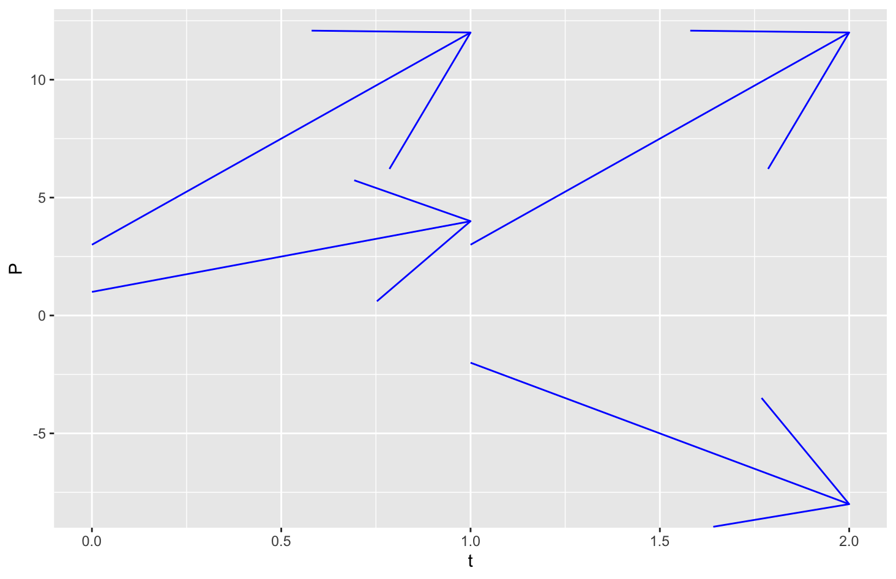
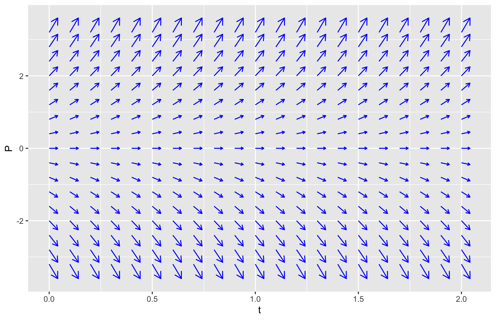
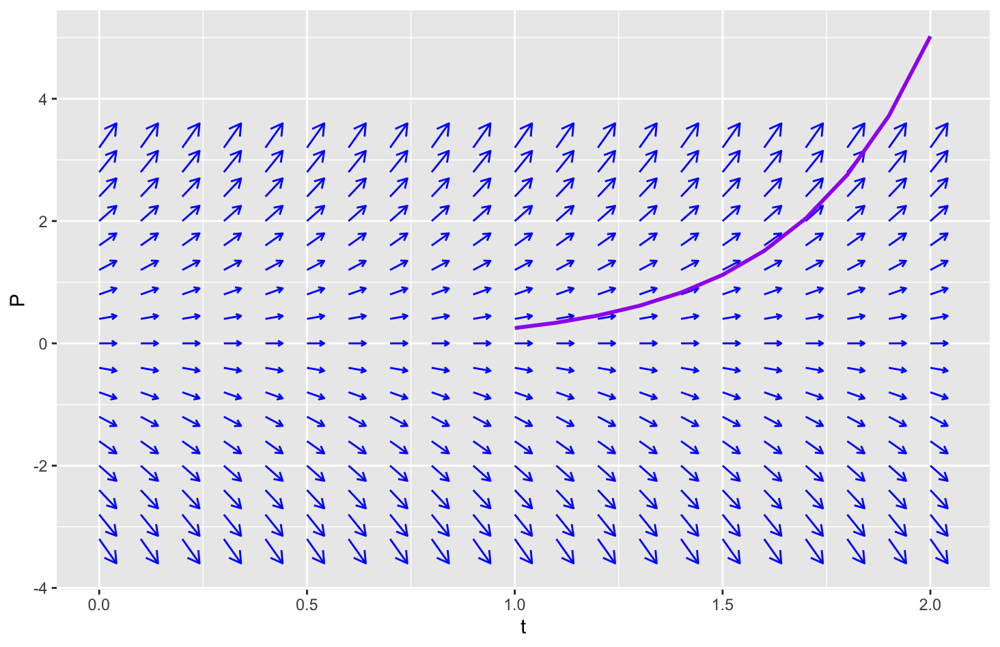

Sequences give us a way to model values at specific evenly spaced times. However, they do not provide a method to model values between those times. Furthermore, discrete time projeciton models are based on using the values of the state variables at one instant in time to predict a future value one time interval later. That is, the increment of change is considered to be a single bulk change in values.
We often want to consider models that allow us to predict values for a state at any time. We want to have the model describe how the state is changing continuously throughout time, rather than one bulk increment of change. The most basic mathematical tool to model continuous functions is a differential equation.
Subsection4.1.1Rates of Change
In order to motivate differential equations, let us think back to population models where the population changed according to births and deaths. For discrete time models, we established functions that described how many births or deaths to add over the course of a cycle. Such a function represented the total accumulated births or deaths, regardless of exactly when those events occurred. For a continuous time model, we instead think in terms of the rate at which births and deaths are occurring.
A rate of change represents the ratio between the changes of two covarying variables. One of the simplest examples is velocity which is the rate of change of distance traveled with respect to time, for which you probably have heard the saying, distance equals rate times time. Mathematically, this is saying that the distance traveled is proportional to the time spent travelling and the rate (velocity) is the proportionality constant. However, this is technically only true for constant rates of change. Calculus introduced the derivative as the mathematical quantity that measures the instantaneous rate of change. This rate of change results from the idea of computing the limit of an average rate of change.
Consider a quantity \(Q\) that is a function of time \(t\text{.}\) The instantaneous rate of change of \(Q\) with respect to \(t\) at a particular moment \(t=a\) is defined as the derivative
That is, the increment of change in \(Q\) is approximately just the derivative times the increment of time. The approximation improves as the increment of time decreases and is exact in the limit.
Returning to our ideas of births and deaths, this suggests that instead of thinking of the total number of births and deaths in a given time period (e.g., per year), we will think of a rate of births or deaths per unit time so that in a short interval of time, the number of births or deaths is approximately that corresponding rate times the length of the time interval.
Subsection4.1.2Differential Equations
A differential equation is an equation that defines the rate of change (a derivative) for a quantity. Unlike calculus where we would start with a function’s formula and use rules of calculus to find the derivative’s formula, in modeling we are going to think of the rate of change as a state variable that can be part of an equation.
Example4.1.1.
We know that a population that is not constrained by its environment tends to grow exponentially. That is, we can think of the population as a function of time \(P(t)\) as satisfying an exponential model,
We can identify a relation between the state variables of \(P\) and \(P'\) by calculating the ratio \(P' / P\) and simplifying. Since \(P'\) is the overall rate of change and \(P\) is the population, the ratio refers to the per capita rate of change. Using the exponential formula and its derivative, we discover that an exponentially growing (or decaying) population satisfies the equation
The value of \(r\) is part of the differential equation. But the value of \(A\) is unspecified, meaning it is free to choose. We are allowed to solve for a specific value for \(A\) in order to match an initial condition.
Example4.1.2.
Find a solution to the differential equation
\begin{equation*}
\frac{dP}{dt} = 3 P
\end{equation*}
that has initial value \(P(0) = 5\text{.}\)
Solution.
Time-dependent variables (functions of time) whose derivatives are proportional to the value of the variable must be exponential. Our example has proportionality constant \(r=3\text{,}\) so the solutions have the form
To find the value of \(A\text{,}\) we use the model formula with \(t=0\) and use it to match the given information \(P(0) = 5\text{.}\) From our formula, we have
Because we know \(P(0) = A\) (from the model formula) and \(P(0) = 5\) (from the initial condition), we must have \(A = 5\text{.}\) That is, \(P(t) = 5e^{3t}\) satisfies both the differential equation and the initial condition.
Mathematics courses focusing on solving differential equations introduce strategies for finding formulas for solutions to differential equations. Because many applications of differential equations don’t actually have formula solutions, we will focus on the behavior of solutions and use computational methods to approximate those solutions.
Subsection4.1.3Slope Fields
To help us understand what a differential equation does, we start by learning about a slope field. In the context of differential equations and in many scientific contexts, a field refers to a measurement that can vary as you move to different points in space. An electric field represents the potential force that would be applied to a charged particle based on its relative position to other charges in space. A gravitational field represents the potential force that would be applied to a mass based on the presence of other masses in space. A slope field indicates that at every point in space, we have an associated slope.
For differential equations, we think of our space as consisting of the time and the state. For a single state variable, say a measure of population \(P\) as in our earlier example, our space will be characterized by time \(t\) and the population \(P\text{.}\) Consider the differential equation \(P' = 3P\text{.}\) The right hand side is a formula that declares a value for the slope as it depends on the current value of \(P\text{.}\) Consequently, at every point \((t,P)\) in our space, we can calculate a slope given by \(3P\text{.}\) This is a slope field, and we would typically represent it as a function
Given the slope field \(f(t,P) = 3P\text{,}\) find the slope at each of the following points.
\(\displaystyle (t,P) = (0,1)\)
\(\displaystyle (t,P) = (1,-2)\)
\(\displaystyle (t,P) = (0,3)\)
\(\displaystyle (t,P) = (1,3)\)
Solution.
This is not much more than evaluating the formula.
At \((t,P) = (0,1)\text{,}\) the slope will be \(f(0,1) = 3(1) = 3\text{.}\)
At \((t,P) = (1,-2)\text{,}\) the slope will be \(f(1,-2) = 3(-2) = -6\text{.}\)
At \((t,P) = (0,3)\text{,}\) the slope will be \(f(0,3) = 3(3) = 9\text{.}\)
At \((t,P) = (1,3)\text{,}\) the slope will be \(f(1,3) = 3(3) = 9\text{.}\)
We visualize a slope field by drawing short line segments or arrows at specially chosen points, often using a grid, so that those segments have slopes matching the value of the slope field. In R using ggplot, this is accomplished with a geometry layer called geom_quiver. This requires an additional library ggquiver be installed before it can be used.
Our plot will be treated almost like a scatter plot using geom_point that specifies variables for x and y, except that our mapping must also include to additional variables u and v that will represent a displacement or rate associated with the \(x\)- and \(y\)-directions. Because slope graphically represents a rise over run, we will think of u as dictating a “run” while we think of v is dictating a “rise”. Using u=1 allows us to let v be the value of the slope field.
Below is a simple implementation of a slope field for the four points in the previous example. We start with a simple data frame containing the \(t\)- and \(P\)-values where our slopes were calculated. We will let a function perform the calculations for us.
# Load the libraries
library(ggplot2)
library(ggquiver)
library(dplyr)
# Create the initial data frame
my_pts <- tibble(t = c(0, 1, 0, 1), P = c(1, -2, 3, 3))
# Define the slope field function
slope <- function(t, P) { 3*P }
# Start with the location of points
slope_field <- my_pts |>
# Then add columns for the dt and dP using slope field
mutate(delta_t = 1,
delta_P = slope(t, P)) |>
# Then feed this into ggplot
ggplot(mapping = aes(x = t, y = P, # Location
u = delta_t, v = delta_P) # Directions
) +
# And create the quiver graphics layer
geom_quiver(color = "blue")
show(slope_field)
Listing4.1.4.

Figure4.1.5.Illustration of the four calculated slopes for the slope field \(f(t,P) = 3P\)
It is much more informative if the slope field is visualized at a collection of points that form a regular grid in space. We will first define a grid by identifying specific \(t\) and \(P\) values and then construct the collection of all points from this grid. The rest of the calculations are essentially unchanged. It often takes some experimentation on the spacing chosen for the grid (see the by argument to seq) and the scale for the arrows (see the vecsize argument to geom_quiver) to get arrows that have nice spacing and length. Steeper arrows always have longer lengths.
# Load the libraries
library(ggplot2)
library(ggquiver)
library(dplyr)
# Create the initial grid of points
my_pts <- expand.grid(t = seq(0, 2, by = 0.1),
P = seq(-3.2, 3.2, by = 0.4))
# Define the slope field function
slope <- function(t, P) { 3*P }
# Start with the location of points
slope_field_data <- my_pts |>
# Then add columns for the dt and dP using slope field
mutate(delta_t = 1,
delta_P = slope(t, P))
# Then feed this into ggplot
ggplot(data = slope_field_data,
mapping = aes(x = t, y = P, # Location
u = delta_t, v = delta_P) # Directions
) +
# And create the quiver graphics layer
geom_quiver(color = "blue", vecsize = 4)
show(slope_field)
Listing4.1.6.

Figure4.1.7.Illustration of the four calculated slopes for the slope field \(f(t,P) = 3P\)
A slope field is related to a solution of a differential equation. If the graph of the solution, which is a function of time \(t\text{,}\) is superimposed on top of a slope field, then at every point along the curve of the function, the tangent line must match the slope of the slope field. In other words, a solution follows the directions provided by the slope field, always smoothly staying parallel to the nearest segments.
The previous code listing defined slope_field as the plot showing the slope field. We can build on top of that graph additional layers that represent different solutions. We know that solutions to \(P' = 3P\) all have the form \(P(t) = Ae^{3t}\text{,}\) so we will include several choices of functions with different values of \(A\text{.}\)
The function \(F\) is not the derivative itself but represents the formula for the slope field. The differential equation says that the value of the rate of change, \(Q'(t)\text{,}\) will exactly the slope of the slope field at each point \((t, Q(t))\) along its curve. To select a single solution, we also need to provide a starting point, called an initial condition.
The following theorem guarantees that a differential equation with an initial value has a unique solution under reasonable conditions.
Theorem4.1.10.Existence and Uniqueness of Initial Value Problems.
Suppose that \(F(t,y)\) represents a continuous function of both \(t\) and \(y\) such that \(\frac{\partial F}{\partial y}\) exists and is bounded (i.e., small changes in \(y\) should result in small changes in \(F(t,y)\text{.}\) Then the differential equation
with initial value \(Q(a) = b\) has a unique solution for some interval \(t \in (a-\epsilon, a+\epsilon)\) with \(\epsilon \gt 0\text{.}\)
The existence property guarantees that a solution will exist on some small interval near the initial value. This gives us a justification for trying to find what that solution looks like. When we look for solutions, we do need to be mindful that we might try to use an interval that is larger than the solution can actually use. So if our method fails, we might need to try a smaller interval of time. The uniqueness property indicates that for any initial value, there can only be one solution that includes that point.
To find numerical approximations of solutions in R, we will use the deSolve library. This library defines a command ode (the letters stand for ordinary differential equation) that will calculate data points to represent these approximate solutions. To solve our equation, we will need to define a function that calculates the function on the right-hand side of the equation. This will be very similar to the functions we used to calculate slope fields, but with some more technical requirements to deal with the variety of problems ode might encounter. The ode command also requires that we provide the initial condition and an array of times at which we will evaluate the solution.
The R function calculating the rate of change or slope required for ode is always expected to have three arguments—one for the time t, one for the state state, and one for model parameters params. Both state and params are intended to allow for more than one variable, so entries are named. So that our calculations for the rate of change at the current time and state are allowed to use those internal names, we put our calculations inside of a with command. The first argument for with is a list of named values (we join state and params into a single list) that we might use in our formulas, and the second argument is a command or command block inside curly braces that does the calculation. Finally, when a state has multiple variables, we will need to report a rate of change for each variable. Consequently, ode expects that our function returns a list of rates rather than just a number. Unfortunately, I have not yet found a way to use the same function for the slope field and for ode because of these different requirements.
Example4.1.11.
We will find a numerical approximation for the solution of the differential equation
with the intial value \(Q(1) = 0.25\) and include it with the slope field generated earlier.
Our R script will need to first call library(deSolve). Then we will define our rate function to represent the formula \(3Q\) as described. The state will only consist of the single variable \(Q\text{.}\) Our model does not have any additional parameters, so the parameters will not actually be used in this example. Once the differential equation is defined, we provide the initial value and times we wish to evaluate.
# Load the library
library(deSolve)
# Define the rate function in this form
rateFcn <- function(t, state, params) {
with(as.list(c(state, params)), {
Q_rate <- 3*Q # Calculate the rate
list(Q_rate) # Return the rate in list
}) # Close the block and end the with command
} # End the function
# Define the initial condition
init_state <- c(Q = 0.25) # (named array of values)
params <- c() # empty = no parameters
# Create an array of times where we evaluate
# We choose the interval of calculation
times <- seq(from = 1, to = 2, by = 0.1)
# Find the solution
solution <- ode(init_state, times, rateFcn, params)
# Result has column for time and each state variable
# Create a graph with both the slope field and the solution
numsoln_graph <- ggplot() +
geom_quiver(data = slope_field_data,
mapping = aes(x = t, y = P,
u = delta_t, v = delta_P),
color = "blue", vecsize = 4) +
geom_line(data = solution,
mapping = aes(x = time, y = Q),
color="purple", linewidth = 1)
show(numsoln_graph)
Listing4.1.12.R script to generate numerical solution to differential equation

Figure4.1.13.Graph showing a numerical solution superimposed on the corresponding slope field \(f(t,P)=3P\text{.}\)